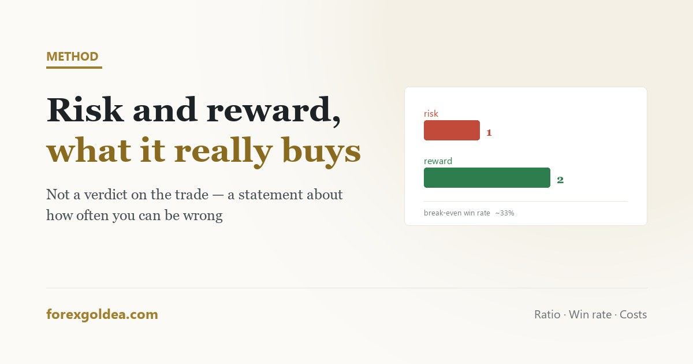

The risk-reward ratio, and what it actually buys

The risk-reward ratio is quoted more often than almost any other number in trading and understood less often than most. It is not a measure of how good a trade is. It is a statement about how often you are allowed to be wrong — and the moment you treat it as the former, it starts doing damage.
In short the ratio compares what you stand to lose to what you stand to gain. Risking $50 to make $100 is 1:2. Its only real function is to set your break-even win rate: at 1:1 you need better than 50% to survive costs, at 1:2 about 33%, at 1:3 about 25%. A high ratio does not make a trade good — it makes a lower hit rate affordable. The failure mode is manufacturing the number: moving the stop closer or the target further to reach a tidy 1:3 produces a beautiful ratio and a system that never reaches its targets.
The ratio, stated plainly
You risk a defined amount to make a defined amount. If your stop is $50 away and your target is $100 away, you are risking one to make two — a ratio of 1:2. That is the whole calculation, and it is deliberately expressed in money rather than dollars-per-ounce, because money is what the account experiences.
Note what the ratio does not contain: any information about whether the trade is likely to work. A 1:5 setup that has no chance of reaching its target is a worse trade than a 1:1 that regularly does. The ratio describes the shape of the bet, not its odds.
What win rate each ratio buys
This is the part that makes the number useful. Every ratio implies a hit rate at which you break even, and it is simple arithmetic rather than opinion:
| Ratio | Break-even win rate | What that means in practice |
|---|---|---|
| 1:1 | 50% | Every second trade must work, before costs. Little margin for a bad run. |
| 1:1.5 | 40% | Four in ten. Workable for many trend approaches. |
| 1:2 | 33% | One in three. The reason this ratio is quoted so often. |
| 1:3 | 25% | One in four — but targets this far away are reached less often. |
| 1:5 | 17% | Comfortable on paper, and a long run of losses in reality. |
Two things get missed when this table is repeated online. First, these are break-even rates: hitting exactly 33% at 1:2 leaves you flat, not profitable, and that is before spread and swap. On gold, where the spread is wider than most instruments, costs push the real requirement noticeably higher.
Second, the ratio and the win rate are not independent. Pushing the target further out lowers the required win rate and lowers the actual one, because price has to travel further to pay you. Improving one column while quietly damaging the other is the most common way traders convince themselves a system improved.
The 1:2 orthodoxy, examined
“Never take a trade below 1:2” is repeated as though it were a law. It is a reasonable default and nothing more.
It became popular because it is forgiving: at 33% break-even, a trader can be wrong twice as often as they are right and still not go backwards, which suits people learning. That is a genuinely good property.
But applied rigidly it rejects entire approaches that work. Some range strategies operate near 1:1 with a high hit rate and positive expectancy. Some trend-following systems run far beyond 1:3 with a hit rate under 30%. Both survive. Neither would pass a blanket 1:2 filter applied without thought.
The honest version of the rule: know your ratio and your hit rate together, and check that the pair produces positive expectancy after costs. Either number alone tells you nothing.
Where the target should actually come from
A ratio is an outcome of two decisions, not an input to them.
The stop belongs at the price that proves the idea wrong — structure or a volatility multiple, as set out in where a stop belongs. The target belongs at the next place price is realistically likely to reach: a prior level, a range boundary, a measured move.
Divide the second by the first and you have your ratio. Sometimes it is 1:3. Sometimes it is 1:1.2, and that is information — it says this particular setup does not offer much room, which is a reason to pass rather than a reason to move the lines.
Manufacturing the number, and what it costs
Once someone believes 1:3 is required, two temptations follow, and both are expensive.
Tightening the stop to improve the ratio. Moving the stop from a structurally sound distance to a closer one does raise the ratio on paper. It also puts the stop inside the noise band, where ordinary movement reaches it. The ratio improves and the hit rate collapses — often far enough to make a working system unprofitable. On gold this is particularly brutal, because the ordinary range is wide.
Extending the target to improve the ratio. Pushing the target past any level price is likely to reach produces trades that go green, stall, and return to the stop. The account experiences a full loss on a trade that was, at one point, substantially profitable.
Both are the same error: treating the ratio as the goal rather than the description. And both are psychologically comfortable in the moment, which is why they are so common — the same mechanism at work in the other ways a trader argues with their own plan.
Ratio and reality
Two practical notes that rarely appear alongside the tables.
Partial exits change the arithmetic. Closing half at 1:1 and running the rest to 1:3 does not give you a 1:3 system. Your realised average is somewhere between the two, and it should be measured rather than assumed. Many traders quote their intended ratio while trading a materially lower one.
Costs are not decoration. On a $6 stop with a $0.30 spread, roughly 5% of the risk is gone before the trade begins. At small target distances that proportion grows quickly, which is the real reason very short-term approaches on gold need an unusually high hit rate to survive.
What the ratio ultimately buys is permission to be wrong at a known frequency. That is worth a great deal — and it is worth nothing if the number was arranged rather than observed.
Reader questions
What is a good risk-reward ratio?
1:2 is a sensible default, but the ratio only means something paired with your win rate. Both extremes can work.
What win rate do I need for a 1:2 risk-reward?
Roughly 33% to break even before costs. Spread and swap mean the profitable figure is meaningfully higher.
Should I always take trades with at least 1:2?
No. Judge ratio and hit rate together for positive expectancy after costs, rather than applying a fixed minimum.
Can I improve my ratio by moving the stop closer?
It improves the number and usually breaks the system — a tighter stop sits inside normal noise and gets hit far more often.
Does taking partial profits change my risk-reward ratio?
Yes — closing part early gives a realised average between the two levels, not the full intended ratio.
How do spread and swap affect the ratio?
They shrink the reward and enlarge the risk — proportionally worse the smaller your target distance.
Where this leaves you
A risk-reward ratio is a description of a trade's shape, not a verdict on its quality. Read it as the hit rate you are signing up for, let the chart decide both the stop and the target, and be suspicious of any tidy number that arrived because you wanted it. The ratio you observe is useful; the one you arrange is a story you are telling yourself.
Affiliate disclosure: we earn a commission when you open and fund an account through our partner links, at no extra cost to you.